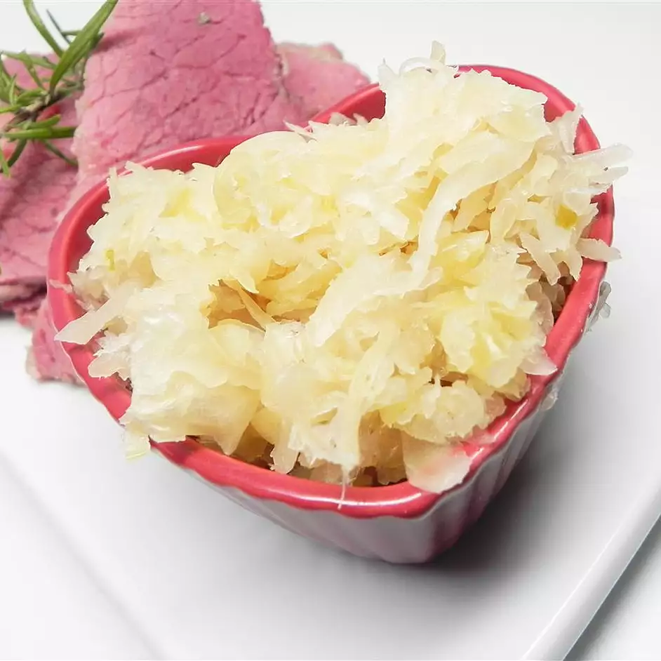

Description
Sauerkraut has long been a staple food, great on its own or as a topper for a variety of foods.
Once sauerkraut is properly fermented, it can be refrigerated or frozen for later use.
Ingredients
- 5 pounds cabbage, thinly sliced
- 1 onion, thinly sliced
- 3 tablespoons sea salt
- 3 cloves garlic, minced
- water to cover
Steps
- Mix cabbage, onion, sea salt, and garlic together in a bowl.
- Firmly pack mixture into a large, clean food-grade plastic bucket.
- Cabbage will start to make its own brine as the salt starts to draw water out of the cabbage.
- Fill a large, clean, food-grade plastic bag with water and place over the salted cabbage mixture to prevent air exposure
- Allow cabbage to ferment in cool, dry place for 1-4 weeks (longer the ferment, the more sour it is). Keep at room temperature.